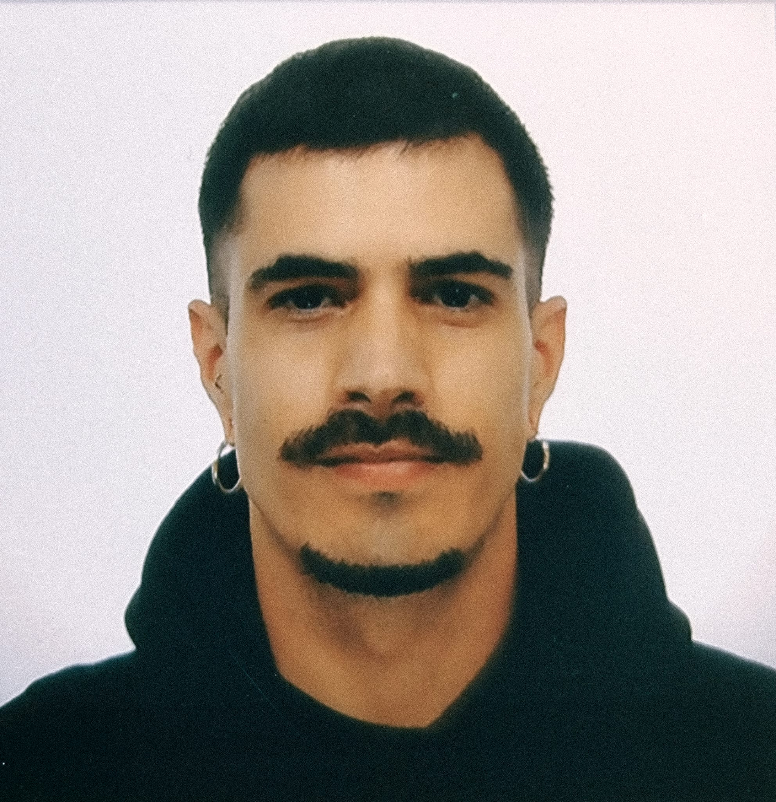
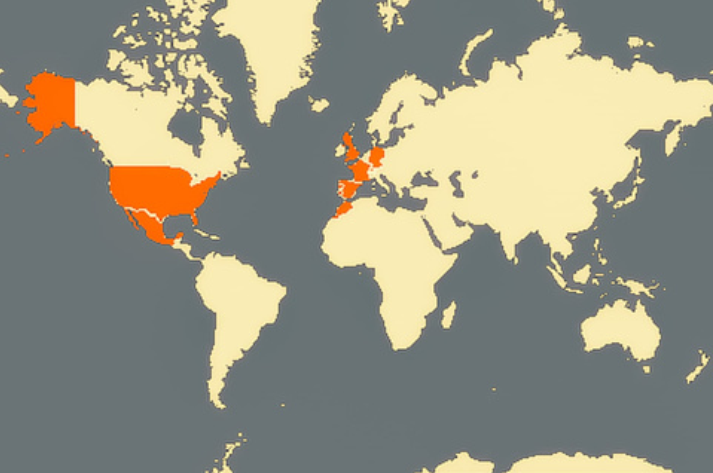

He trabajado en varios países,
demostrando adaptabilidad y eficacia
en entornos multiculturales.
Soy capaz de colaborar en equipos diversos
y asumir responsabilidades de forma independiente.
Actualmente estoy cursando un Ciclo Formativo
de Grado Superior en Desarrollo de Aplicaciones Web,
formación que refleja mi compromiso
con el aprendizaje continuo
y mi interés por integrarme profesionalmente
en el sector tecnológico.
Tengo la intención de seguir formándome
en este ámbito para mantenerme actualizado
y aportar soluciones innovadoras
en un entorno en constante evolución.
Mis estudios en filosofía han mejorado
mi capacidad para comunicar ideas
de manera clara y persuasiva,
así como para analizar problemas
desde diferentes perspectivas
y encontrar soluciones creativas.
Además, mis viajes internacionales
me han permitido desarrollar habilidades
lingüísticas avanzadas,
facilitando la comunicación en varios idiomas
y enriqueciendo mi sensibilidad cultural.
Me adapto rápidamente a nuevas situaciones
y aplico mis conocimientos
de forma eficaz en entornos cambiantes.
Permiso de conducir B.
KANANGA, Barcelona (España)
Namibia, Botswana & Zimbabwe
Otoño 2023 & Verano 2024
Berlin Relaxed, Berlín (Alemania)
Mayo 2023 - Agosto 2023 | Noviembre 2024 - Junio 2024
Rinderberg Swiss Alpine Lodge, Zweisimmen (Suiza)
Junio 2022 - Abril 2023 | Junio 2020 - Abril 2021
Orllati, Freiburg (Suiza)
Diciembre 2021 - Marzo 2022
Moss Landing Seashells, California (EEUU)
Septiembre 2021 - Noviembre 2021
Michel Mayer Renovation, Lausanne (Suiza)
Junio 2022 - Abril 2023 | Junio 2020 - Abril 2021
Sociedad Cooperativa San Lorenzo, Cabezabellosa (España)
Octubre 2019 - Marzo 2020
Greenline Organic Nursery, California (EEUU)
Noviembre 2018 - Febrero 2029
Champagne Amyot, Loches sur Ource (Francia)
Junio 2018 - Septiembre 2018
©Web Personal creada para la materia de Lenguaje de Marcas
del CFGS DAW